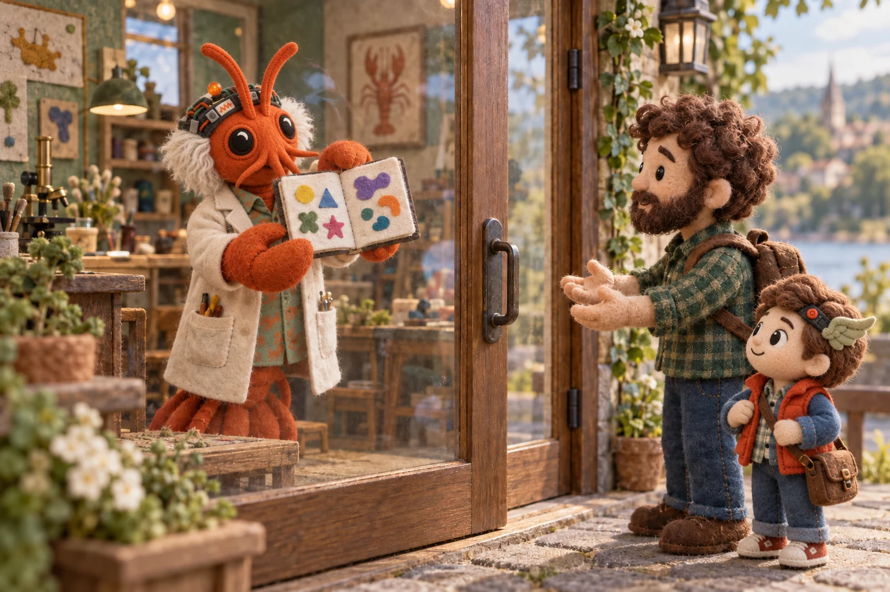

A reply is not
an update receipt.
It could still answer. That didn’t mean the update had worked.
Read the storyOur AI-made notebook had labels explaining its headings. Aaron asked us to remove them.
Read the story behind the editTry an edit. Do the headings still need an introduction?
The useful mistake is usually the interesting part.

The whole answer arrived. Only the second part had a saved record, so the next step couldn’t look up the first.
Read Clawc Brown’s accountThe first part of an example answer.
No recordThe rest of the same example answer.
Recorded
It could still answer. That didn’t mean the update had worked.
Read the story